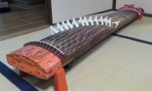

ここでは、邦楽部で演奏できる楽器について紹介します｡

箏 -koto-
何と言っても邦楽の花形！古曲からポップスまで幅広い曲を演奏できます。
奏法がたくさんあり、一つの曲の中でも多彩な表情を見せてくれます。
親指、人差し指、中指に爪をはめて演奏します。

十七絃 -17gen-
箏より絃の本数が多く、大きい楽器です。
低く響く重低音が出るので、後ろから合奏を支える縁の下の力持ち的存在です。
また、四分音符を刻むことが多く、邦楽では指揮者のような役割もはたします。
三絃 -3gen-
邦楽において三絃とは、地唄三味線を指します。
他の楽器と比べて張りがある短い音が出ます。
尺八 -syaku8-
主に一尺八寸を使いますが、曲によっては一尺六寸を使います。
深みのある落ち着いた音色に、虜になる部員多数。
篠笛 -shinobue-
六本調子と八本調子があり、前者を主に使います。
高く澄んだ音と演奏姿勢は「邦楽」らしく、見るだけでも華やかです。